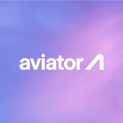
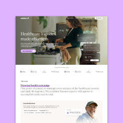
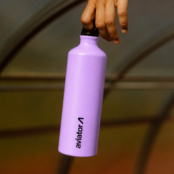
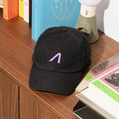
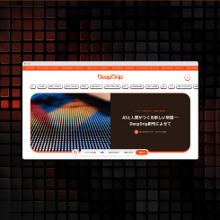
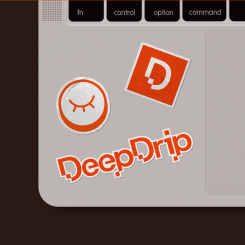
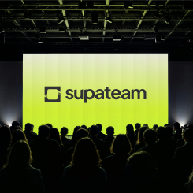
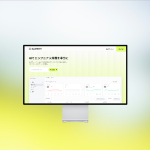
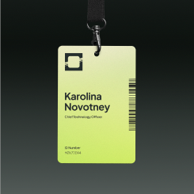
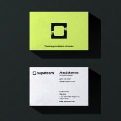

2D1は、ブランド、デジタルプロダクト、アイデアを横断して活動する、独立したデザインハウスです。初期の構想から、見た目や使い心地、世の中でのあり方まで、一緒にかたちにしていきます。
クライアントワークと並行して、自分たちのものをつくり、気の合う人たちと協働しています。私たちは、こうしたオブジェクトやアイデアをFamiliar Charactersと呼びます。日々の暮らしに居場所を見つけるだけの個性を持ったものたちです。
スタジオ
明確なアイデアに、個性を。
私たちの中心にあるのは、デザインスタジオとしての仕事です。小さなチームや事業者とともに、アイデアを明確にし、その個性を形にします。それぞれのアイデアを本質まで削ぎ落としながら、思わず笑顔になるディテールをひとつ残します。










ブランドを一からつくることもあれば、ウェブサイトを見直し、プロダクトを磨き、すでにある物語の伝え方を考え直すこともあります。戦略からビジュアルアイデンティティ、インターフェースのピクセルひとつまで。新鮮な視点と手を動かす姿勢で向き合います。
目指すのは、明確で、直感的に使えて、あなただけの個性があるものをつくることです。
- デザインコンサルティング
- アドバイザリー、ディレクション
- デジタルプロダクトデザイン
- ウェブサイト、UX/UI、デザインシステム
- ブランドデザイン
- アートディレクション、グラフィックデザイン、ビジュアルアイデンティティ
ショップ
日々の暮らしに、なじみのある存在を。
つくる喜びは、私たちの活動の中心にあります。自分たちのためにつくるものも、クライアントのための仕事と同じところから始まります。明確なアイデアと、そのものらしさを生むディテールから。

最初につくる日用品は、どこへ行くにも一緒についてくるキャンバストートです。シンプルな形、便利な内ポケット、自分のものだとわかる赤のアクセント。ストラップを手に持ったときの感触から、小物の居場所まで、細部をひとつずつ考えています。
バッグはまだ開発中です。あなたの日々に迎えたいと思っていただけたら、ぜひお知らせを受け取るためにご登録ください。
- 素材
- 高密度に織られた黒いキャンバス。
- サイズ
- 約 幅40 × 高さ36 × マチ10cm。ストラップを除きます。
- ストラップ
- 外側は黒、内側は赤の長いストラップ。肩掛けに対応。
- 赤いタグ
- サイドの縫い目に挟み込んだ、四角い織りネーム。
- ポケット
- ボトル用のバンドと、小物用の四角いポケット。
- 開口部
- 開口部の折り返しに縫い込んだマグネット留め。
- ディテール
- 前面には控えめなチャコール色のピクセルの目。背面の上部中央には、小さな2D1の刺繍ロゴ。
試作段階の仕様です。サイズやディテールは製品化までに変更になる場合があります。
つながる
新しい動きと、つくる過程を。